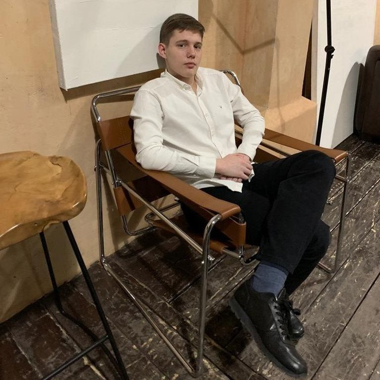

Участники
Команда проекта

3D-моделирование и сборка
Фирсов Алексей Павлович
Координирует обработку отсканированных фрагментов рамы: распределяет части между участниками, консультирует по вопросам моделирования и контролирует качество.
Финальная задача — сборка всех элементов в единую 3D-модель и её подготовка к печати.